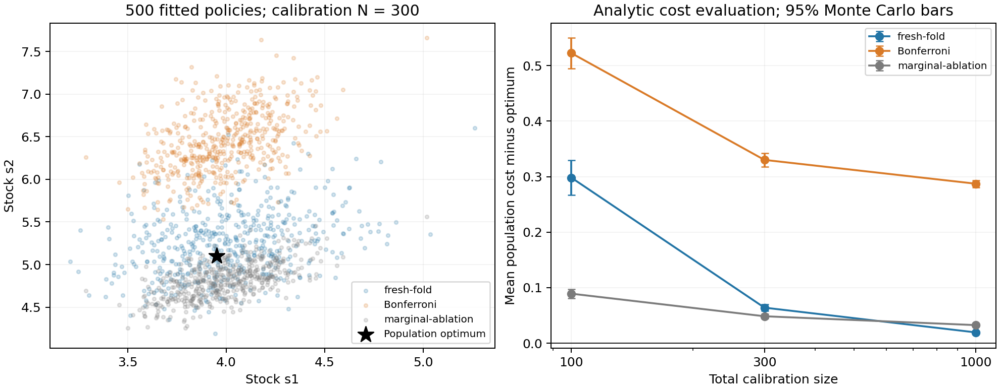

Deterministic and algebraic cores of the conformal-calibration theory are formalized in Lean 4 with Mathlib, with probabilistic steps entering as named hypotheses.
Abstract
Conformal prediction provides finite-sample, distribution-free coverage guarantees that can support decision-making in specific settings. In multistage problems, earlier decisions determine the populations relevant to later calibration. When later scores are refit using earlier calibration results, reusing those cases for ranking need not preserve exchangeability with a surviving test case. We study sequential conformal calibration with a fresh fold at each stage: conditional on earlier folds, the selected fold scores and the surviving test score are exchangeable. This yields finite-sample coverage guarantees for every prefix of the decision sequence. For atomless survivor score distributions, we derive a universal Binomial-thinned Beta chain for the realized coverage process. Its law depends only on fold sizes and target levels, even under predictable refitting, and yields exact coverage slack, abstention probabilities, and calibration-conditional guarantees. We further characterize the tradeoff between freshness and data reuse. For fixed scores, strict-survivor reuse is exactly valid. For adaptive scores refit using past calibration data, reusing survivors can incur worst-case rank loss, while blocked designs provide an intermediate option between full reuse and stagewise fresh folds. As a case study, we apply the framework to serial multi-echelon inventory problem and propose a sequential conditional-quantile formulation. Each stock level is learned as a context-dependent quantile of cumulative demand among scenarios satisfying earlier no-backlog constraints. We connect these targets to common-shift stationarity and derive decision-level implications for the resulting calibrated policies. In a three-echelon simulation, fresh-fold refitting achieves 81.98% final-prefix coverage against an 81.82% target while reducing mean cost by 5.5% relative to the Bonferroni baseline.
Problem
In multistage decision problems, earlier calibrated thresholds determine which cases survive to later stages. Refitting later scores on reused calibration data can break exchangeability with a surviving test case and invalidate conformal coverage guarantees.
Approach
The authors propose sequential conformal calibration with a fresh calibration fold at each stage. Thresholds are set as augmented order statistics of survivor scores, and scores may be refit predictably from earlier folds. They derive a universal Binomial-thinned Beta chain for the realized coverage process and analyze the tradeoff between fresh folds and data reuse. The framework is applied to serial multi-echelon inventory, where it gives a sequential conditional-quantile formulation. Parts of the theory are checked in Lean 4.34.1 with Mathlib, with each claim linked to a named declaration.
Results
Fresh-fold calibration gives finite-sample prefix coverage guarantees, and under atomless scores it gives an exact coverage law that depends only on fold sizes and target levels. In a three-echelon simulation it reaches 81.98% final-prefix coverage against an 81.82% target and reduces mean cost by 5.5% relative to the Bonferroni baseline. The Lean proofs use only the standard axioms and contain no sorry.

Figure 1: Left: fitted stocks at N=300 , with the population optimum marked by a star. The scatter is not a confidence region for s^{*} . Right: mean population cost gaps; bars are 1.96 standard errors across calibration replications.
Target rule
Calibration
k=1
k=2
k=3
Cost
Required
—
90.91
86.36
81.82
—
Marginal
Conformal
90.94
84.61
77.08
70.49
Sequential
Plug-in
89.34
84.16
78.88
69.12
Sequential
Conformal
90.98
86.52
81.98
68.98
Target/calibration ablation: mean prefix coverage (%) and cost over 100 fits